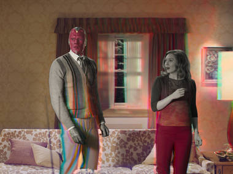
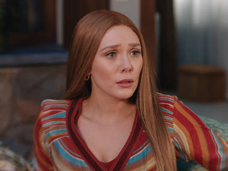
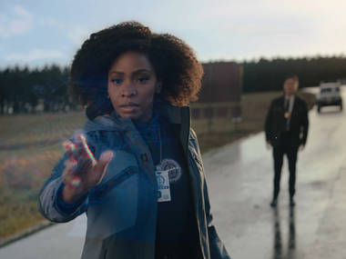
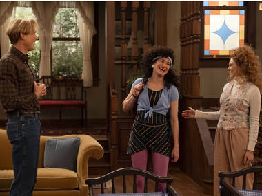
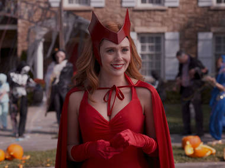
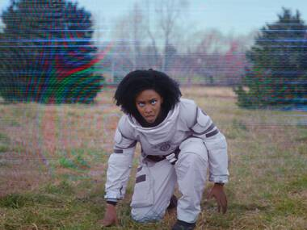
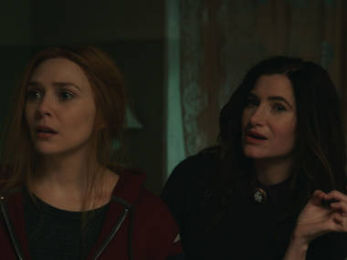

Episodios
Wanda Maximoff y Vision llegan a vivir al pueblo de Westview, donde tendrán que esconder sus súperpoderes para acoplarse a la vida mundana de los suburbios. Sin embargo nada es lo que parece y poco a poco la realidad comenzará a desvanecerse.
1. Filmada con público en vivo

La pareja de superhéroes intenta ocultar sus poderes en una cena con el jefe de Visión y su esposa.
2. No cambie de canal
Wanda y Visión quieren encajar en la comunidad y hacen un número de magia en el show de talentos
3. Ahora en colores
Wanda se prepara para un parto acelerado con Visión, pero el embarazo daña sus poderes
4. Interrumpimos este programa
Desaparece Mónica Rambeau, la directora de una misión especial con armas sentientes
5. En un episodio muy especial...
Visión sospecha del comportamiento de los vecinos, y Wanda trata de entender qué pasa
6. ¡Espectacular estreno de Halloween!
En la confusión de Halloween, Visión se separa de Wanda e investiga las anomalías de Westview
7. Abajo la cuarta pared
Mónica planea volver a la anomalía. Wanda sortea obstáculos. Visión forma otra alianza para ayudar
8. En el episodio anterior...
Wanda viaja al pasado para encontrar respuestas sobre el presente y el futuro